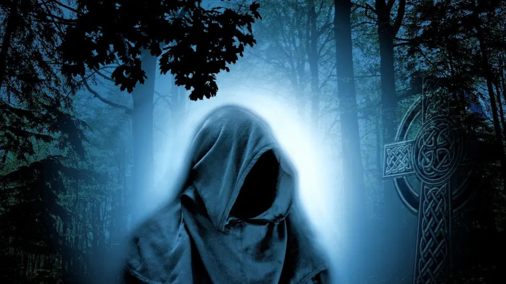
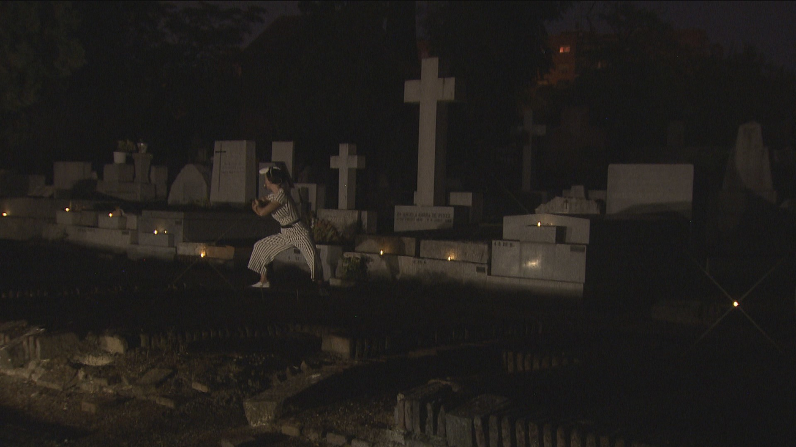

THE GATE SCREECHES AS YOU PUSH IT OPEN...
Fog curls around your legs, and distant whispers echo between the gravestones. A lantern flickers on one of the tombs, lighting the name Eleanor Gray,
the witch who was buried alive centuries ago.Suddenly, the ground trembles — and you see her shadow moving beneath the soil. Now you have two choices:
Break the Curse Run Away
 